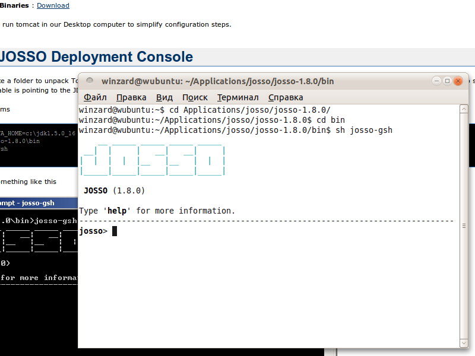
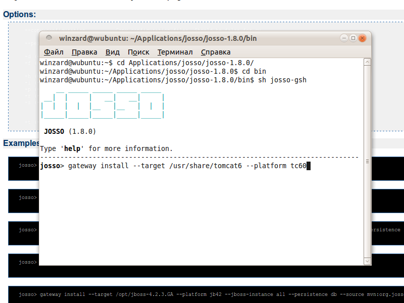
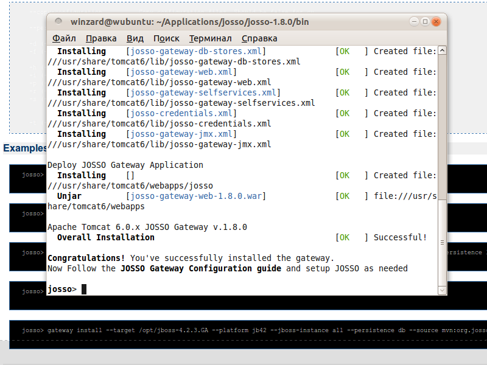
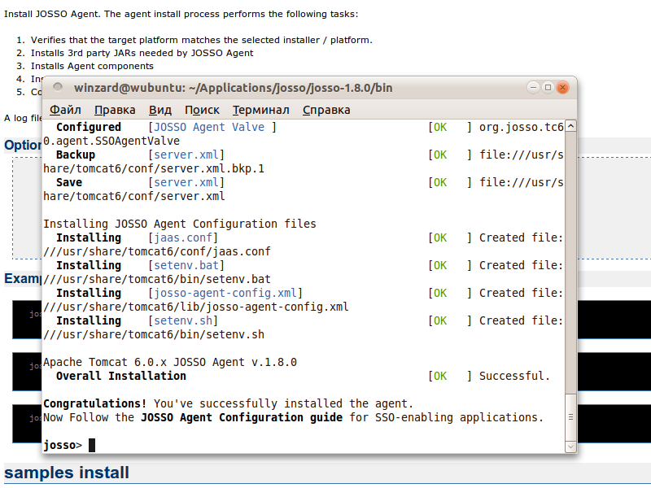
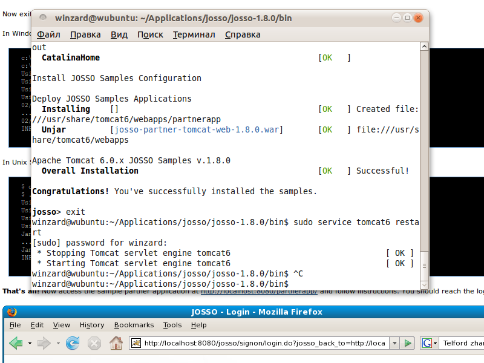

|
<< Click to Display Table of Contents >> Navigation: Rus > Руководство администратора > Как интегрировать TrackStudio c JOSSO |
JOSSO, или Java Open Single Sign-On, это решение с открытым исходным кодом на J2EE для централизованной авторизации и аутентификации пользователей для приложений.
1.Скачайте исполняемые файлы сервера JOSSO http://sourceforge.net/projects/josso/files/JOSSO/
2.Распакуйте их.
3.В терминале или командной строке перейдите в папку, куда вы распаковали josso
4.Перейдите в папку bin внутри папки josso.
5.Выполните команду josso-gsh.bat или sh josso-gsh

Выполните в консоли JOSSO команду
josso> gateway install --target /usr/share/tomcat6 --platform tc60


Теперь нужно установить JOSSO Agent. Выполните в консоли JOSSO команду
josso> agent install --target /usr/share/tomcat6 --platform tc60

Теперь перезапустите Tomcat
josso> exit
$ sudo service tomcat6 restart

После этого в программе управления сервером TrackStudio Server Manager в разделе "Безопасность" выберите вкладку JOSSO.
В соответствующих полях укажите URL для входа и выхода из JOSSO.
Нажмите кнопку "Проверить соединение".
Приступим к настройке JOSSO.
Запустите консоль josso, как написано выше.